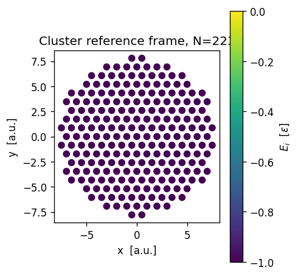
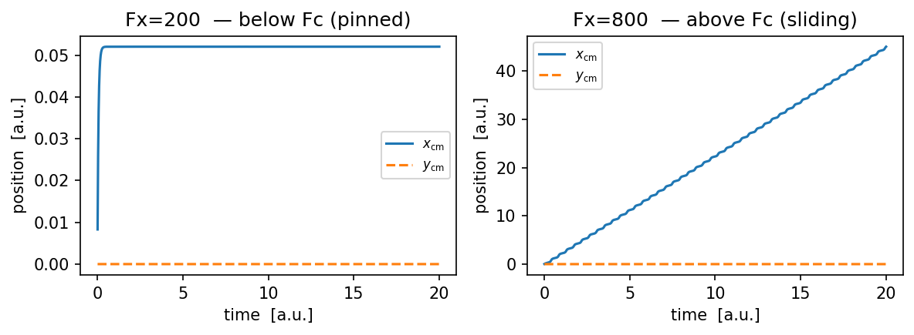
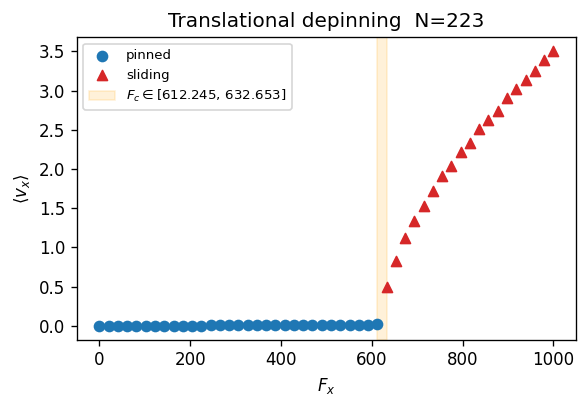
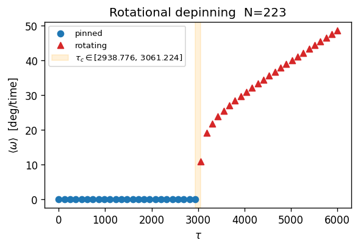

Molecular dynamics: depinning under applied force and torque
This notebook drives a rigid cluster with an applied external force (Fx) or torque (Tau) and finds the depinning transition: the critical force Fc (or critical torque Tau_c) above which the cluster begins to slide.
The dynamics follow the Euler-Maruyama overdamped Langevin equation:
eta_t * dx_cm/dt = Fx + Fx_substrate + noise_x eta_t * dy_cm/dt = Fy + Fy_substrate + noise_y eta_r * dtheta/dt = Tau + Tau_substrate + noise_theta
where eta_t and eta_r are the translational and rotational drag coefficients (computed from N and the moment of inertia), and the noise satisfies FDT: variance = 2 * kBT / (eta * dt).
sweep_md runs one MD trajectory per grid point (here: per Fx or Tau value) in parallel, then applies a post-processing function to extract a scalar metric (drift velocity or angular velocity). The depinning appears as a sharp onset in that metric.
[1]:
import numpy as np
from numpy import sqrt
import matplotlib.pyplot as plt
from time import time
from flake.substrate import substrate_from_params, get_ks
from flake.cluster import cluster_from_params, calc_cluster_langevin
from flake.dynamics import run_md
from flake.sweep import sweep_md, grid_sweep, drift_velocity, mean_velocity
System definition
Commensurate cluster on a sinusoidal triangular substrate (rho=1). Same geometry as the barrier notebook so the depinning force Fc is directly comparable to the static friction Fs computed from the MEP.
kBT=1e-8 instead of 0 avoids saddle-point ambiguity in the EM integrator. At epsilon=1 this is thermally negligible (T is effectively zero).
[2]:
ks = get_ks(1, 3, 4./3., 0.) # triangular substrate wave vectors
params = {
'sub_basis': [[0, 0]],
'epsilon': 1,
'well_shape': 'sin',
'ks': ks,
'a1': np.array([1., 0.]),
'a2': np.array([0.5, -sqrt(3.)/2.]),
'cl_basis': [[0, 0]],
'cluster_shape': 'circle',
'N1': 15, 'N2': 15,
'theta': 0.0, 'pos_cm': [0., 0.],
}
pen_func, en_func, en_inputs = substrate_from_params(params)
pos = cluster_from_params(params)
N = pos.shape[0]
# Translational and rotational drag coefficients.
# eta_r / eta_t ~ <r^2> / 1 sets the ratio of rotational to translational
# relaxation times -- larger clusters relax rotationally more slowly.
eta = 1.0
eta_t, eta_r = calc_cluster_langevin(eta, pos)
pen = pen_func(pos + params['pos_cm'], params['pos_cm'], *en_inputs)[0]
print('N=%i E=%.3g eta_t=%.3g eta_r=%.3g eta_r/eta_t=%.3g'
% (N, np.sum(pen), eta_t, eta_r, eta_r/eta_t))
fig, ax = plt.subplots(dpi=120, figsize=(4, 4))
sc = ax.scatter(pos[:, 0], pos[:, 1], c=pen, vmin=-params['epsilon'], vmax=0)
plt.colorbar(sc, ax=ax, label=r'$E_i$ [$\epsilon$]')
ax.set_xlabel('x [a.u.]')
ax.set_ylabel('y [a.u.]')
ax.set_title('Cluster reference frame, N=%d' % N)
ax.set_aspect('equal')
plt.tight_layout()
plt.show()
N=223 E=-223 eta_t=223 eta_r=6.86e+03 eta_r/eta_t=30.8

Single trajectory: below and above depinning
Before running the full sweep it is instructive to watch individual trajectories at Fx just below and just above the depinning threshold. This gives a physical intuition for what the sweep is measuring.
[6]:
base_kw = dict(
eta=1.0, kBT=1e-8, dt=1e-3, n_steps=20000,
Tau=0., print_every=10,
pos_cm0=params['pos_cm'],
)
fig, axes = plt.subplots(1, 2, dpi=150, figsize=(8, 3))
for ax, Fx_test, label in [
(axes[0], 200., 'below Fc (pinned)'),
(axes[1], 800., 'above Fc (sliding)'),
]:
traj = run_md(pos, en_func, en_inputs, Fx=Fx_test, **base_kw)
t, xcm, ycm = traj['t'], traj['pos_cm'][:, 0], traj['pos_cm'][:, 1]
ax.plot(t, xcm, label=r'$x_\mathrm{cm}$')
ax.plot(t, ycm, label=r'$y_\mathrm{cm}$', ls='--')
ax.set_xlabel('time [a.u.]')
ax.set_ylabel('position [a.u.]')
ax.set_title('Fx=%.0f — %s' % (Fx_test, label))
ax.legend(fontsize=8)
plt.tight_layout()
plt.show()

Force sweep: translational depinning
grid_sweep({'Fx': ...}) generates one parameter set per Fx value. drift_velocity() post-processes each trajectory to extract (x_f - x_0) / (t_f - t_0) – a scalar that is ~0 in the pinned state and grows linearly above depinning.
n_jobs=-1 uses all available CPUs; each trajectory is independent. Results are saved to outdir so they can be reloaded without re-running.
[8]:
t0 = time()
spec = grid_sweep({'Fx': np.linspace(0., 1000., 50)})
results = sweep_md(
pos, en_func, en_inputs, spec,
base_md_kwargs={
'eta': 1.0,
'kBT': 1e-8,
'dt': 1e-3,
'n_steps': 10000,
'Tau': 0.,
'print_every': 10,
'pos_cm0': params['pos_cm'],
},
post_fn=drift_velocity(),
n_jobs=-1,
outdir='sweep_depinning_Fx',
save=True,
overwrite=True,
verbose=True,
)
Fx_vals = np.array([r['params']['Fx'] for r in results])
vdrift = np.array([r['result'] for r in results])
print('Done: %.1fmin' % ((time() - t0) / 60.))
[sweep_md] 1 / 50
[sweep_md] 2 / 50
[sweep_md] 3 / 50
[sweep_md] 4 / 50
[sweep_md] 5 / 50
[sweep_md] 6 / 50
[sweep_md] 7 / 50
[sweep_md] 8 / 50
[sweep_md] 9 / 50
[sweep_md] 10 / 50
[sweep_md] 11 / 50
[sweep_md] 12 / 50
[sweep_md] 13 / 50
[sweep_md] 14 / 50
[sweep_md] 15 / 50
[sweep_md] 16 / 50
[sweep_md] 17 / 50
[sweep_md] 18 / 50
[sweep_md] 19 / 50
[sweep_md] 20 / 50
[sweep_md] 21 / 50
[sweep_md] 22 / 50
[sweep_md] 23 / 50
[sweep_md] 24 / 50
[sweep_md] 25 / 50
[sweep_md] 26 / 50
[sweep_md] 27 / 50
[sweep_md] 28 / 50
[sweep_md] 29 / 50
[sweep_md] 30 / 50
[sweep_md] 31 / 50
[sweep_md] 32 / 50
[sweep_md] 33 / 50
[sweep_md] 34 / 50
[sweep_md] 35 / 50
[sweep_md] 36 / 50
[sweep_md] 37 / 50
[sweep_md] 38 / 50
[sweep_md] 39 / 50
[sweep_md] 40 / 50
[sweep_md] 41 / 50
[sweep_md] 42 / 50
[sweep_md] 43 / 50
[sweep_md] 44 / 50
[sweep_md] 45 / 50
[sweep_md] 46 / 50
[sweep_md] 47 / 50
[sweep_md] 48 / 50
[sweep_md] 49 / 50
[sweep_md] 50 / 50
Done: 0.1min
[10]:
# The depinning transition appears as a sharp onset in drift velocity.
# Below Fc: vdrift ~ 0 (pinned). Above Fc: vdrift grows linearly with F - Fc.
# The orange band brackets the transition region [last pinned, first sliding].
#
# The threshold 1e-2 is appropriate here because kBT=1e-8 so thermal drift
# is negligible -- any vx > 1e-2 is genuine sliding.
fig, ax = plt.subplots(dpi=120, figsize=(5, 3.5))
pinned = vdrift[:, 0] < 1e-1
sliding = ~pinned
ax.scatter(Fx_vals[pinned], vdrift[pinned, 0], color='tab:blue',
label='pinned', zorder=3)
ax.scatter(Fx_vals[sliding], vdrift[sliding, 0], color='tab:red',
marker='^', label='sliding', zorder=3)
if sliding.any() and pinned.any():
Fc_lo = Fx_vals[pinned].max()
Fc_hi = Fx_vals[sliding].min()
ax.axvspan(Fc_lo, Fc_hi, alpha=0.15, color='orange',
label=r'$F_c \in [%.3f,\, %.3f]$' % (Fc_lo, Fc_hi))
ax.set_xlabel(r'$F_x$')
ax.set_ylabel(r'$\langle v_x \rangle$')
ax.legend(fontsize=8)
ax.set_title('Translational depinning N=%i' % N)
plt.tight_layout()
plt.show()

Torque sweep: rotational depinning
Same idea, but driving the cluster with an applied torque Tau instead of Fx. drift_omega extracts (theta_f - theta_0) / (t_f - t_0), the angular drift velocity. A sharp onset in omega marks the rotational depinning threshold Tau_c.
[12]:
def drift_omega():
"""Post-processing: return angular drift velocity dtheta/dt in deg/time."""
def _post_fn(traj_dict, run_params):
theta = traj_dict['theta']
t = traj_dict['t']
dt_tot = float(t[-1] - t[0])
if dt_tot == 0.:
return 0.
return (theta[-1] - theta[0]) / dt_tot
return _post_fn
t0 = time()
spec_tau = grid_sweep({'Tau': np.linspace(0., 6000., 50)})
results_tau = sweep_md(
pos, en_func, en_inputs, spec_tau,
base_md_kwargs={
'eta': 1.0,
'kBT': 1e-8,
'dt': 1e-3,
'n_steps': 50000,
'print_every': 10,
},
post_fn=drift_omega(),
n_jobs=-1,
outdir='sweep_depinning_tau',
save=True,
overwrite=True,
)
Tau_vals = np.array([r['params']['Tau'] for r in results_tau])
odrift = np.array([r['result'] for r in results_tau])
print('Done: %.1fmin' % ((time() - t0) / 60.))
[sweep_md] 1 / 50
[sweep_md] 2 / 50
[sweep_md] 3 / 50
[sweep_md] 4 / 50
[sweep_md] 5 / 50
[sweep_md] 6 / 50
[sweep_md] 7 / 50
[sweep_md] 8 / 50
[sweep_md] 9 / 50
[sweep_md] 10 / 50
[sweep_md] 11 / 50
[sweep_md] 12 / 50
[sweep_md] 13 / 50
[sweep_md] 14 / 50
[sweep_md] 15 / 50
[sweep_md] 16 / 50
[sweep_md] 17 / 50
[sweep_md] 18 / 50
[sweep_md] 19 / 50
[sweep_md] 20 / 50
[sweep_md] 21 / 50
[sweep_md] 22 / 50
[sweep_md] 23 / 50
[sweep_md] 24 / 50
[sweep_md] 25 / 50
[sweep_md] 26 / 50
[sweep_md] 27 / 50
[sweep_md] 28 / 50
[sweep_md] 29 / 50
[sweep_md] 30 / 50
[sweep_md] 31 / 50
[sweep_md] 32 / 50
[sweep_md] 33 / 50
[sweep_md] 34 / 50
[sweep_md] 35 / 50
[sweep_md] 36 / 50
[sweep_md] 37 / 50
[sweep_md] 38 / 50
[sweep_md] 39 / 50
[sweep_md] 40 / 50
[sweep_md] 41 / 50
[sweep_md] 42 / 50
[sweep_md] 43 / 50
[sweep_md] 44 / 50
[sweep_md] 45 / 50
[sweep_md] 46 / 50
[sweep_md] 47 / 50
[sweep_md] 48 / 50
[sweep_md] 49 / 50
[sweep_md] 50 / 50
Done: 0.3min
[14]:
# Threshold 1e-1: higher than translational because rotational trajectories
# run for more steps (n_steps=50000) and the angular drift is noisier.
# Adjust downward if the sweep runs longer.
fig, ax = plt.subplots(dpi=120, figsize=(5, 3.5))
pinned = odrift < 1e-1
rotating = ~pinned
ax.scatter(Tau_vals[pinned], odrift[pinned], color='tab:blue',
label='pinned', zorder=3)
ax.scatter(Tau_vals[rotating], odrift[rotating], color='tab:red',
marker='^', label='rotating', zorder=3)
if rotating.any() and pinned.any():
Tau_lo = Tau_vals[pinned].max()
Tau_hi = Tau_vals[rotating].min()
ax.axvspan(Tau_lo, Tau_hi, alpha=0.15, color='orange',
label=r'$\tau_c \in [%.3f,\, %.3f]$' % (Tau_lo, Tau_hi))
ax.set_xlabel(r'$\tau$')
ax.set_ylabel(r'$\langle \omega \rangle$ [deg/time]')
ax.legend(fontsize=8)
ax.set_title('Rotational depinning N=%i' % N)
plt.tight_layout()
plt.show()

[ ]: